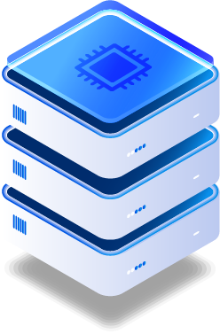

하드웨어 기반으로 시스템의 명령어 흐름을 모니터링하여 OS 커널 무결성을 실시간으로 보장하는 보안 솔루션
소프트웨어로는 막을 수 없는 위협을 하드웨어로 차단
루트킷, 커널 익스플로잇 등 OS 커널을 공격하는 고급 위협은 소프트웨어 기반 보안 솔루션으로는 탐지와 방어에 근본적인 한계가 있습니다. 공격자가 OS를 장악하면 소프트웨어 모니터 자체를 우회할 수 있기 때문입니다.
Outerstellar는 CPU 하드웨어 수준에서 명령어 흐름(Instruction Flow)을 모니터링하여 OS가 손상되거나 조작된 경우에도 무결성 위반을 즉각적으로 탐지합니다. ACM CCS에 게재된 Interstellar 연구를 기반으로 합니다.

소프트웨어 모니터의 한계를 하드웨어로 극복합니다
하드웨어 수준 무결성 보장을 위한 4대 핵심 역량
CPU의 명령어 실행 흐름(Control Flow)을 하드웨어 수준에서 실시간으로 추적합니다. 정상적인 실행 경로에서 벗어나는 모든 이상 행위를 즉각적으로 탐지하고 차단합니다.
운영체제 커널의 코드 영역, 데이터 구조, 시스템 콜 테이블 등 핵심 영역의 무결성을 실시간으로 검증합니다. 루트킷, 커널 익스플로잇 등의 공격을 즉시 탐지합니다.
모니터링 시스템 자체가 하드웨어에 구현되어 있어 악성 소프트웨어나 공격자가 모니터링 기능을 비활성화하거나 우회하는 것이 원천적으로 불가능합니다.
세계 최고 보안 학술대회 ACM CCS에 게재된 연구를 기반으로 학문적으로 엄밀하게 검증된 기술을 적용합니다. 이론적 안전성 증명과 실험적 검증을 모두 갖춘 신뢰할 수 있는 솔루션입니다.
Outerstellar가 시스템 무결성을 보장하는 핵심 환경
하이퍼바이저와 VM의 커널 무결성을 하드웨어 수준에서 실시간 검증하여 클라우드 인프라의 신뢰성 보장
국가 수준의 사이버 공격(APT)에서도 핵심 시스템의 무결성을 보장하는 고신뢰 보안 기반 구축
발전소, 정수장 등 핵심 인프라의 제어 시스템이 사이버 공격으로 조작되지 않도록 하드웨어 수준에서 보호
자율주행 차량, 드론 등 임베디드 시스템의 펌웨어 및 OS 무결성을 하드웨어로 보장하여 안전한 자율 운행 지원
ATM, 결제 단말기, 은행 코어 시스템 등 금융 인프라의 OS 무결성을 검증하여 금융 사기 및 해킹 차단
생명 유지 장치, 수술 로봇 등 안전 중요 의료 장비의 소프트웨어 무결성을 하드웨어 수준에서 실시간 검증
ACM CCS 검증 기술 기반의 하드웨어 무결성 모니터링 솔루션 도입에 대해 전문 연구진이 안내해 드립니다.